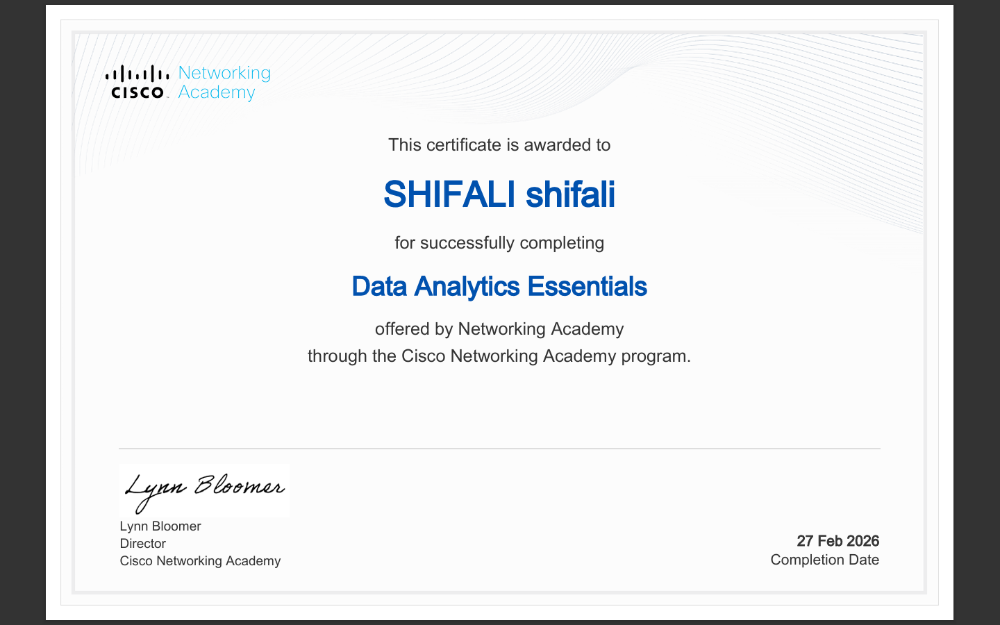
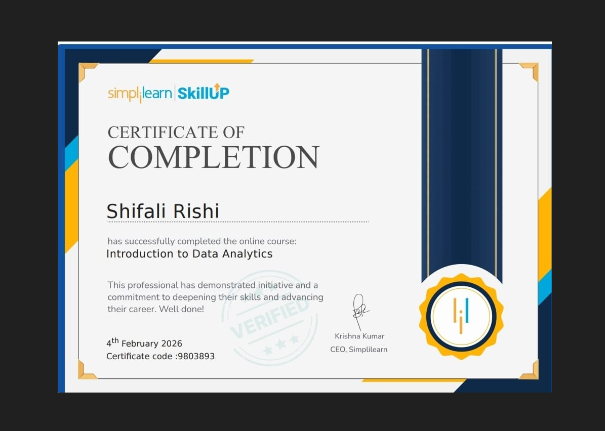
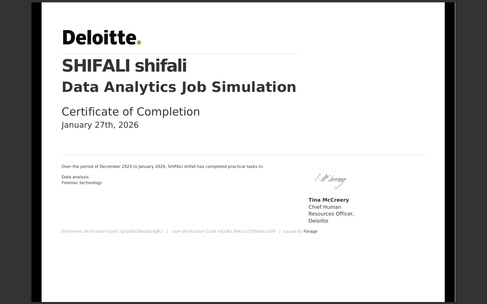

Developed a strong understanding of core data analytics concepts, including data cleaning, exploration, and visualization. Gained hands-on experience in analyzing datasets to identify patterns, trends, and actionable insights. Learned to apply analytical thinking and basic statistical techniques to support data-driven decision-making in real-world scenarios.

Gained a foundational understanding of data analytics, including data collection, cleaning, and exploratory analysis. Learned to work with datasets to identify trends, patterns, and key insights using basic analytical techniques. Developed skills in data visualization and interpreting results to support informed, data-driven decision-making.
Gained a strong foundation in Microsoft Excel, focusing on data organization, formatting, and basic data analysis techniques. Developed hands-on experience with formulas, functions, and data visualization tools such as charts and tables. Learned to clean, structure, and analyze data efficiently, enabling better decision-making and improving productivity in data-driven tasks.

Completed a real-world data analytics job simulation focused on solving business problems using data. Performed data cleaning, analysis, and visualization to uncover key insights and support decision-making. Developed practical experience in working with datasets, creating dashboards, and presenting findings in a clear, business-focused manner, simulating the responsibilities of a data analyst in a professional environment.